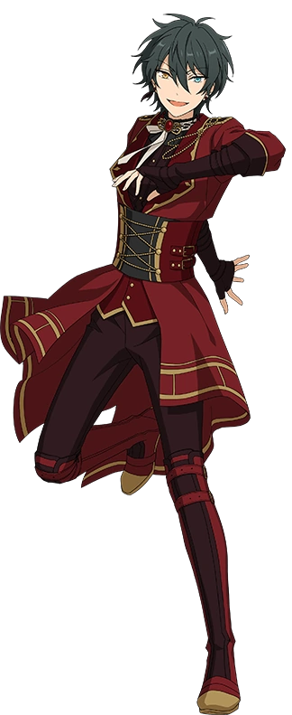

|  |
|---|
|
|
| "Mika admires Shu Itsuki's artwork, but is now in pursuit of his own personal art form. He has a gentle personality, but there are occasionally times when the mind of a natural airhead leaks out. With his slightly melancholic singing voice, his performances are both personal and comforting. He is a member of COSMIC PRODUCTION's Valkyrie." -quoted from in-game, translation from the English Ensemble Stars Wiki |
| Mika Kagehira is from the game/anime Ensemble Stars!!. He is part of the duo-unit Valkyrie, alongside upperclassman Shu Itsuki (whom he refers to as "Oshi-san/Teach"). Like most of the cast, he studies at Yumenosaki Academy, where he is in class 3-A. |
| In the Main Story, Mika plays a relatively minor role. However, in event/side stories, he plays more signficant roles, especially in events where the main focus is his unit, Valkyrie. |
| Mika is a timid, emotional, air-headed, but still good-hearted young man. Oftentimes, he makes strange noises based on his emotions and feelings. (like a cat) He has a doll complex, or rather, he often calls himself a doll and tries to act like one. However, as the story goes on, he eventually starts getting over his doll complex, and starts accepting and realizing the fact that he is indeed a human. |
| A lot of people relate to Mika's awkwardness in social situations, and also admire him for his singing voice on stage. The weird noises he makes are often found endearing by fans, and is joked about. (often written as "Nnah!") There's also the fact that his speaking voice and singing voice have a very big difference between them. In fact, both members of Valkyrie are often praised for their stellar vocals. |